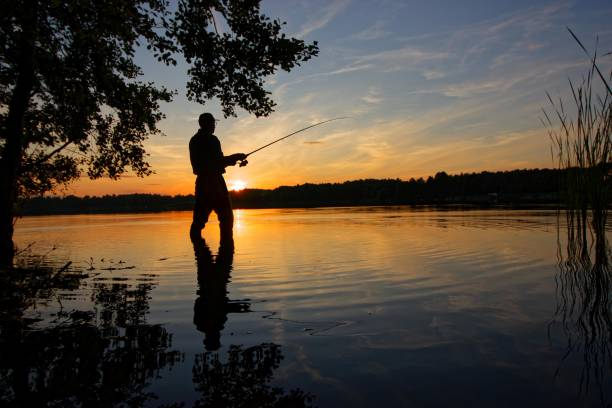

Речная рыба
Речная рыбалка это В такие участки, когда вода высокая, чаще всего заходит стайками малек, за которым вслед устремляются хищники и условно хищные виды рыб. В притоках кроме хищников можно найти голавля, язя, плотву.
Мало того, нужны качественные снасти, которые стоят немало денег. Этот способ рассчитан в основном на хищную и наполовину хищную рыбу, однако на моей памяти есть исключения. Основные объекты ловли — щука, окунь и судак, реже — жерех, голавль, язь, красноперка и сом
Можно зделать приманку для рыби из распаренные злаки, горох, кукуруза, панировочные или молотые сухари, бисквит, макароны, перемолотые семена подсолнечника, рыбий комбикорм. Глина, песок, земля из кротовых нор, кукурузная мука, манка, молотая овсянка или горох. Молотые семена льна, конопли, подсолнечника, арахис, отруби, овсянка, кокосовая стружка.
Удачной вам рыбалки
| Параметр | Описанние |
|---|---|
| Экипировка | Удилище, катушка, сачок, поплавки, грузила, рыболовный ящик |
| Основные виды рыб | Карп, щука, окунь, лещ, голавль, судак, сом |
| Приманки | Воблеры, блесны, силиконовые приманки, черви, опарыш, хлеб, кукуруза |
| Техники ловли | Поплавочная, донная, спиннинговая, нахлыст, фидер Сезон |
| Сезон | Весна-осень (активность зависит от вида рыбы) |
| Особенности | Учитывать течение, перепады глубин, наличие коряг и растительности |